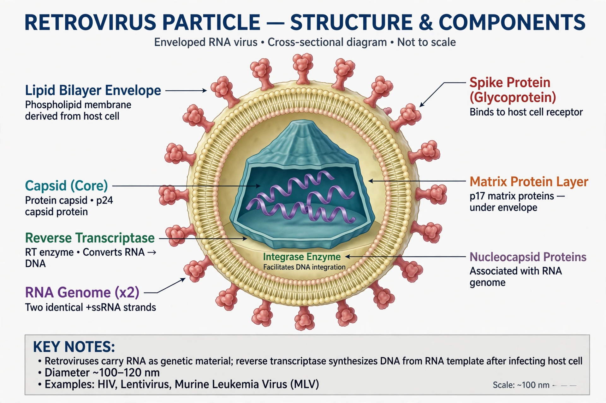

| Retroviridae | |
 Structure of a retrovirus particle | |
| Family | Retroviridae |
|---|---|
| Genome | Diploid positive-sense single-stranded RNA |
| Key enzyme | Reverse transcriptase |
| Notable members | HIV-1, HIV-2, HTLV-1 |
A retrovirus is a virus that inserts a DNA copy of its RNA genome into the DNA of a host cell it invades, thereby changing the genome of that cell. Retroviruses belong to the family Retroviridae and are defined by their use of reverse transcriptase, an enzyme that transcribes RNA into DNA — reversing the usual direction of genetic information flow described by the central dogma of molecular biology.
After entering a host cell, the retroviral particle uncoats and reverse transcriptase converts its single-stranded RNA genome into double-stranded DNA. This DNA enters the nucleus and is integrated into the host chromosome by the viral enzyme integrase, becoming a provirus. The host's machinery then transcribes and translates the provirus, producing new viral RNA and proteins that assemble into particles which bud from the cell. Because integration is permanent, a provirus is inherited by all daughter cells.
The canonical retroviral genome contains three main genes: gag (structural proteins), pol (reverse transcriptase, integrase, protease), and env (envelope glycoproteins), flanked by long terminal repeats (LTRs) that regulate expression. So-called complex retroviruses, such as the lentiviruses, carry additional accessory and regulatory genes.
The best-known human retroviruses are HIV-1 and HIV-2, which cause AIDS, and HTLV-1, associated with adult T-cell leukaemia. Other retroviruses cause cancers and immunodeficiencies in many animal species; the first retrovirus shown to cause cancer, Rous sarcoma virus, led to the discovery of oncogenes. About 8% of the human genome consists of endogenous retroviral sequences — remnants of ancient infections of germ-line cells.
Engineered retroviral and lentiviral vectors are standard tools for delivering genes into cells in research and in gene therapy.